Violência dentro da família, fora do casal: França registra 96.800 vítimas em 2025, e três em cada quatro eram menoresViolences dans la famille, hors couple : 96 800 victimes enregistrées en France en 2025, dont trois sur quatre mineuresViolence within the family, outside the couple: France recorded 96,800 victims in 2025, three in four of them minors
24 NOV 2026 · Silvania Batista

Fitas pretas nas placas das cidades: prefeitos da França protestam contra cortes no orçamento de 2027Rubans noirs sur les panneaux : les maires de France protestent contre les coupes du budget 2027Black ribbons on town signs: French mayors protest against 2027 budget cuts
24 NOV 2026 · Anne Lopes

Pagou imposto, multa ou hospital com cheque? Greve em Rennes trava mais de um milhão de cheques do EstadoImpôt, amende ou hôpital payé par chèque ? Une grève à Rennes bloque plus d'un million de chèques publicsPaid a tax, fine or hospital bill by cheque? A strike in Rennes is holding up over a million public-sector cheques
24 NOV 2026 · Silvania Batista

25 de novembro: marchas contra a violência às mulheres em 25 e 28/11, e a lei integral aprovada pelos deputados espera o Senado em janeiro25 novembre : marches contre les violences faites aux femmes les 25 et 28/11, et la loi intégrale adoptée par les députés attend le Sénat en janvier25 November: marches against violence towards women on 25 and 28 November, and the comprehensive law passed by MPs awaits the Senate in January
23 NOV 2026 · Silvania Batista
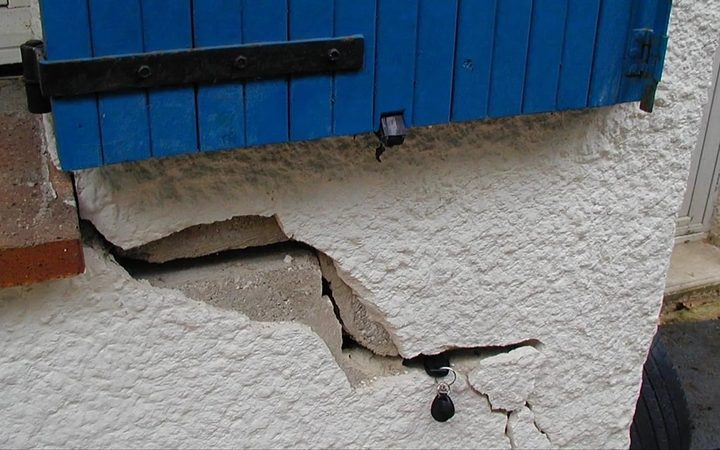
Casa rachada pela seca ou danificada por inundação: 960 comunas foram reconhecidas em catástrofe natural, e o prazo para avisar o seguro é de 30 diasMaison fissurée par la sécheresse ou abîmée par une inondation : 960 communes reconnues en catastrophe naturelle, et 30 jours pour prévenir son assureurHome cracked by drought or hit by flooding: 960 communes recognised as natural disaster zones, and owners have 30 days to tell their insurer
24 NOV 2026 · Silvania Batista
Suspeita de vazamento do Ministério do Interior para o RN: o préfet Hugues Moutouh pede para deixar o cargo e Marine Le Pen nega ter recebido segredosSoupçons de fuites du ministère de l'Intérieur vers le RN : le préfet Hugues Moutouh demande à être déchargé et Marine Le Pen nie avoir reçu des secretsSuspected leaks from the Interior Ministry to the RN: prefect Hugues Moutouh asks to step aside and Marine Le Pen denies receiving secrets
23 NOV 2026 · Anne Lopes
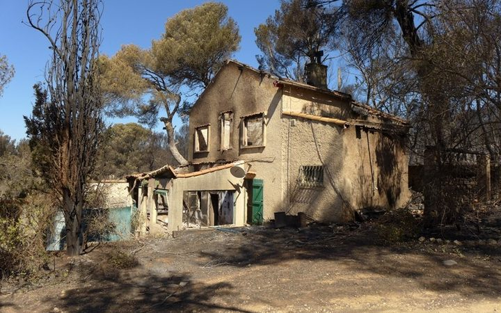
Tem casa perto de mata na França? Roçar o terreno é obrigação legal em 52 departamentos, e o governo diz que o inverno é a hora de fazerUne maison près d'un bois ? Débroussailler est une obligation légale dans 52 départements, et le gouvernement rappelle que l'hiver est le bon momentA house near woodland in France? Clearing undergrowth is a legal duty in 52 departments, and the government says winter is the time to do it
24 NOV 2026 · Silvania Batista
Policiais que atiram passam a ser presumidos dentro da lei: o Parlamento aprova a presunção de legítima defesaLes policiers qui font usage de leur arme seront présumés dans leur droit : le Parlement adopte la présomption de légitime défensePolice who use their weapons will be presumed to have acted lawfully: Parliament passes the presumption of self-defence
23 NOV 2026 · Silvania Batista
O que muda na França em dezembro de 2026: Smic, gás, Prime de Noël, impostos, bicicletas no TGV e grevesCe qui change en France en décembre 2026 : Smic, gaz, prime de Noël, impôts, vélos dans le TGV et grèvesWhat changes in France in December 2026: minimum wage, gas, Christmas bonus, taxes, bikes on TGV trains and strikes
21 NOV 2026 · Anne Lopes
Nova greve na função pública em 1º de dezembro: oito sindicatos convocam escolas, hospitais e serviços públicos por saláriosNouvelle grève dans la fonction publique le 1er décembre : huit syndicats appellent écoles, hôpitaux et services publics à se mobiliser pour les salairesNew civil service strike on 1 December: eight unions call out schools, hospitals and public services over pay
21 NOV 2026 · Silvania Batista
Sexto sábado de protestos: 82.500 manifestantes na França segundo o Ministério do Interior, 150 mil segundo os sindicatos, e 144 detençõesSixième samedi de mobilisation : 82 500 manifestants en France selon le ministère de l'Intérieur, 150 000 selon les syndicats, et 144 interpellationsSixth Saturday of protests: 82,500 demonstrators in France according to the Interior Ministry, 150,000 according to unions, and 144 arrests
22 NOV 2026 · Silvania Batista
Bomba de calor em mensalidades: a oferta integrada já está aberta, mas não se soma ao MaPrimeRénov'Pompe à chaleur en mensualités : l'offre intégrée est ouverte, mais pas cumulable avec MaPrimeRénov'Heat pump in monthly payments: the integrated offer is open, but cannot be combined with MaPrimeRénov'
22 NOV 2026 · Silvania Batista
Aluguel atrasado e APL: a partir de 1º de janeiro de 2027, a dívida conta a partir de 450 euros ou três meses, e o proprietário tem dois meses para avisar a CAFLoyer impayé et APL : à partir du 1er janvier 2027, l'impayé est constitué dès 450 euros ou trois mois, et le bailleur a deux mois pour prévenir la CAFUnpaid rent and housing aid: from 1 January 2027, arrears count from 450 euros or three months, and landlords have two months to notify the CAF
21 NOV 2026 · Silvania Batista
RSA limitado a dois anos para quem pode trabalhar: proposta vai ao plenário em 26 de novembro, depois de perder o artigo principal na comissãoRSA limité à deux ans pour les personnes aptes à travailler : la proposition arrive en séance le 26 novembre, après avoir perdu son article principal en commissionRSA benefit capped at two years for people able to work: the bill reaches the floor on 26 November after losing its key article in committee
20 NOV 2026 · Silvania Batista
Menores responsáveis aos 16 anos e penas mínimas desde os 13: o que a direita quer mudar na justiça de menores e o que já existeMineurs responsables à 16 ans et peines minimales dès 13 ans : ce que la droite veut changer dans la justice des mineurs et ce qui existe déjàLiability at 16 and minimum sentences from 13: what the right wants to change in juvenile justice and what already exists
20 NOV 2026 · Anne Lopes
Depois do PS, a direita: os nove textos que a Droite Républicaine leva ao plenário da Assemblée em 26 de novembroAprès le PS, la droite : les neuf textes que la Droite républicaine porte dans l'hémicycle le 26 novembreAfter the PS, the right: the nine texts the Droite Républicaine brings to the Assembly floor on 26 November
20 NOV 2026 · Silvania Batista
Teto dos aluguéis prorrogado por dois anos: Parlamento aprova a lei antes do fim do prazo, em 23 de novembroEncadrement des loyers prolongé de deux ans : le Parlement adopte la loi avant l'échéance du 23 novembreRent caps extended for two years: French Parliament passes the law before the 23 November deadline
20 NOV 2026 · Silvania Batista
Deputados são os eleitos mais visados na França: 80,7 infrações registradas para cada 100, segundo o primeiro estudo nacional do Ministério do InteriorLes députés sont les élus les plus visés en France : 80,7 infractions enregistrées pour 100 députés, selon la première étude nationale du ministère de l'IntérieurMPs are France's most targeted elected officials: 80.7 recorded offences per 100 MPs, according to the Interior ministry's first nationwide study
19 NOV 2026 · Anne Lopes
Coletes amarelos convocam o « ato VI » neste sábado, 21 de novembro: o que se sabe sobre Paris e as linhas fechadas no fim de semanaLes gilets jaunes appellent à un « acte VI » ce samedi 21 novembre : ce que l'on sait pour Paris et les lignes fermées ce week-endYellow vests call an « Act VI » this Saturday, 21 November: what we know about Paris and the lines closed over the weekend
19 NOV 2026 · Silvania Batista
Orçamento da Sécurité sociale 2027: Senado aprova o texto e mantém o reajuste de todas as aposentadorias pela inflaçãoBudget de la Sécurité sociale 2027 : le Sénat adopte le texte et maintient la revalorisation de toutes les pensions sur l'inflationFrance's 2027 Social Security budget: the Senate passes the bill and keeps all pensions indexed to inflation
19 NOV 2026 · Silvania Batista
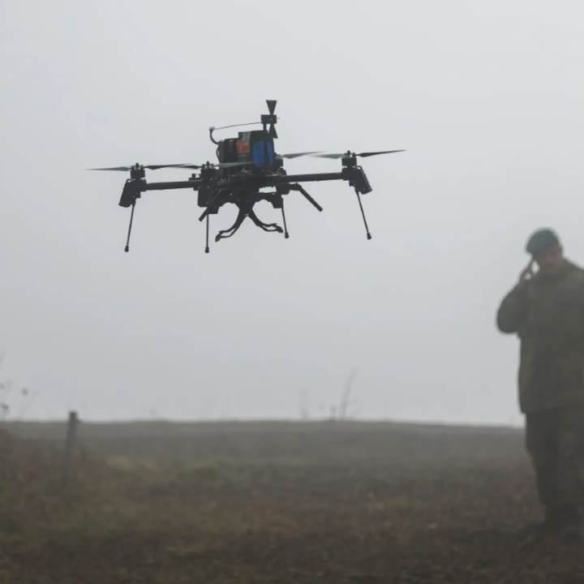
Inundação, drone e ciberataque: França testa em Frontignan como reagir a ameaças híbridasSubmersion, drone et cyberattaque : la France teste à Frontignan sa réponse aux menaces hybridesFlood, drone and cyberattack: France tests its response to hybrid threats in Frontignan
18 NOV 2026 · Anne Lopes
"Taxa dos motins": seguro de casa e de carro na França pode subir 0,8% em 2027, mas o texto final ainda não saiu« Taxe émeutes » : l'assurance habitation et auto pourrait augmenter de 0,8 % en 2027, mais le texte final n'est pas paruFrance's "riot tax": home and car insurance could rise by 0.8% in 2027, but the final text is not out yet
18 NOV 2026 · Silvania Batista
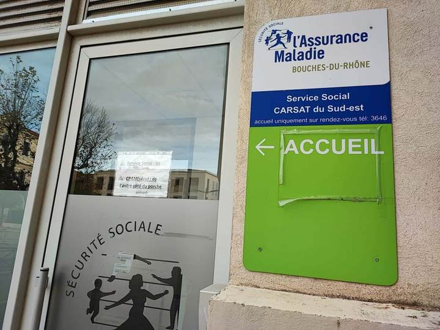
Por que quem tem 29 anos na França está recebendo uma carta da Assurance Maladie sobre fertilidadePourquoi les personnes de 29 ans en France reçoivent un courrier de l'Assurance Maladie sur la fertilitéWhy 29-year-olds in France are receiving a letter from the Assurance Maladie about fertility
18 NOV 2026 · Anne Lopes
Apple vai a julgamento em Paris em junho de 2027, acusada de dificultar o conserto de iPhones fora da sua redeApple sera jugée à Paris en juin 2027, accusée d'avoir entravé la réparation d'iPhone hors de son réseauApple to stand trial in Paris in June 2027, accused of obstructing iPhone repairs outside its network
17 NOV 2026 · Silvania Batista
Salon des maires 2026: 13 ministérios e cerca de 30 órgãos do Estado num mesmo pavilhão em Paris, de 24 a 26 de novembroSalon des maires 2026 : 13 ministères et près de 30 opérateurs de l'État réunis sous un même pavillon à Paris, du 24 au 26 novembreMayors' Fair 2026: 13 ministries and some 30 state agencies under one roof in Paris, 24 to 26 November
17 NOV 2026 · Anne Lopes
Colônias israelenses: Assembleia Nacional vota em 19 de novembro proposta que proíbe o comércio com os assentamentosColonies israéliennes : l'Assemblée nationale examine le 19 novembre une proposition de loi qui interdit le commerce avec les coloniesIsraeli settlements: France's National Assembly debates on 19 November a bill banning trade with the settlements
17 NOV 2026 · Silvania Batista
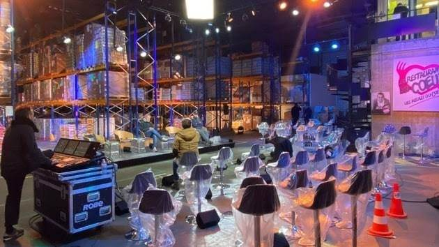
Debate nos Restos du Cœur: cinco candidatos à presidência e o que propõem para moradia social, jovens e aposentadoriaDébat aux Restos du Cœur : cinq candidats à la présidentielle et leurs propositions sur le logement social, les jeunes et les retraitesDebate at the Restos du Cœur: five presidential candidates and what they propose on social housing, young people and pensions
17 NOV 2026 · Silvania Batista
Vazamento na Maileva, filial da La Poste: dados de até 22 milhões de pessoas roubados, e o risco agora são as falsas cobrançasFuite chez Maileva, filiale de La Poste : les données de jusqu'à 22 millions de personnes volées, et le risque, ce sont désormais les fausses relancesBreach at Maileva, a La Poste subsidiary: data on up to 22 million people stolen, and the risk now is fake payment demands
17 NOV 2026 · Silvania Batista
Greve desta terça, 17 de novembro: a mobilização cresce e atinge trens, escolas, guichês públicos e possivelmente voosGrève de ce mardi 17 novembre : la mobilisation s'élargit et touche trains, écoles, guichets publics et peut-être les volsTuesday 17 November strike: the walkout widens to trains, schools, public counters and possibly flights
16 NOV 2026 · Silvania Batista
Genocídio dos tutsis em Ruanda: comerciante refugiado na França vai a julgamento em Paris a partir de 17 de novembroGénocide des Tutsi au Rwanda : un commerçant réfugié en France jugé à Paris à partir du 17 novembreGenocide against the Tutsi in Rwanda: a trader with refugee status in France goes on trial in Paris from 17 November
16 NOV 2026 · Anne Lopes
Igualdade salarial: a partir de 19 de novembro, às 10h51, as mulheres na França passam a trabalhar "de graça" até o fim do ano, e a lei da transparência salarial ainda espera o SenadoÉgalité salariale : à partir du 19 novembre à 10h51, les femmes en France travaillent « gratuitement » jusqu'à la fin de l'année, et la loi sur la transparence salariale attend toujours le SénatEqual pay: from 10:51 on 19 November, women in France are symbolically working "for free" until the end of the year, while the pay transparency bill still awaits the Senate
16 NOV 2026 · Silvania Batista
Protestos de 14 de novembro: 106 mil pessoas na França e 24 mil em Paris, a menor mobilização desde outubroMobilisation du 14 novembre : 106 000 personnes en France et 24 000 à Paris, le plus faible niveau depuis octobre14 November protests: 106,000 people across France and 24,000 in Paris, the lowest turnout since October
16 NOV 2026 · Anne Lopes
Prime de Noël 2026: pagamento a partir de 15 de dezembro, de 152,45 euros para uma pessoa só e mais com filhosPrime de Noël 2026 : versement à partir du 15 décembre, de 152,45 euros pour une personne seule et davantage avec des enfantsChristmas bonus 2026: paid from 15 December, from 152.45 euros for a single person and more with children
16 NOV 2026 · Silvania Batista
Fioul doméstico: com a procura em alta, entregas atrasam e a Fioulmarket suspende novos pedidos. Como conferir o desconto a que você tem direitoFioul domestique : face à la ruée, les livraisons prennent du retard et Fioulmarket suspend les nouvelles commandes. Comment vérifier la baisse à laquelle vous avez droitHeating oil in France: demand surges, deliveries slip and Fioulmarket pauses new orders. How to check the discount you are owed
16 NOV 2026 · Silvania Batista
Protestos deste sábado, 14 de novembro: percurso em Paris, 70 mil policiais e o que muda na cidadeManifestations de ce samedi 14 novembre : parcours à Paris, 70 000 policiers et ce qui change en villeSaturday 14 November protests: the Paris route, 70,000 police and what changes in the city
14 NOV 2026 · Silvania Batista

Taxe d'habitation 2026: quem tem residência secundária na França paga até 15 de dezembroTaxe d'habitation 2026 : les propriétaires de résidence secondaire paient avant le 15 décembreTaxe d'habitation 2026: second-home owners in France must pay by 15 December
13 NOV 2026 · Silvania Batista
Naturalização: França flexibiliza a análise para aposentados com pensão do exteriorNaturalisation : la France assouplit l'examen des retraités qui perçoivent une pension étrangèreNaturalisation: France eases its review of retirees with foreign pensions
13 NOV 2026 · Silvania Batista
Trabalha e cuida de um familiar? Deputados votam em 19 de novembro um texto com congé mais longo e crédito de impostoSalarié et aidant d'un proche ? Les députés examinent le 19 novembre un texte qui allonge le congé et crée un crédit d'impôtWorking while caring for a relative? French MPs debate a bill on 19 November for longer leave and a tax credit
13 NOV 2026 · Silvania Batista
Ajuda de 100 euros para quem usa o carro para trabalhar: o pedido vai até 31 de dezembroIndemnité carburant de 100 euros pour les actifs grands rouleurs : la demande est ouverte jusqu'au 31 décembre100-euro fuel allowance for people who drive to work: applications close on 31 December
13 NOV 2026 · Silvania Batista
Éric Zemmour oficializa a candidatura à eleição presidencial de 2027 e põe a imigração no centro da campanhaÉric Zemmour officialise sa candidature à la présidentielle de 2027 et place l'immigration au cœur de sa campagneÉric Zemmour makes his 2027 presidential bid official and puts immigration at the centre of his campaign
13 NOV 2026 · Silvania Batista

Greve na função pública em 17 de novembro: seis sindicatos pedem o fim do congelamento do ponto de índice; bombeiros seguem em greve até 4 de dezembroGrève dans la fonction publique le 17 novembre : six syndicats exigent le dégel du point d'indice ; les pompiers restent en grève jusqu'au 4 décembrePublic service strike on 17 November: six unions demand an end to the pay-scale freeze; firefighters stay on strike until 4 December
10 NOV 2026 · Silvania Batista
Teddy Riner, o maior judoca da França, anuncia candidatura à eleição presidencial de 2027Teddy Riner, le plus grand judoka français, annonce sa candidature à l'élection présidentielle de 2027Teddy Riner, France's greatest judoka, announces a bid for the 2027 presidential election
10 NOV 2026 · Anne Lopes
Smic sobe 1,6% em 1º de dezembro e passa a 1.502 euros líquidos: o que muda e o que ainda depende de decretoLe Smic augmente de 1,6 % le 1er décembre et passe à 1 502 euros nets : ce qui change et ce qui dépend encore de décretsFrance's minimum wage rises 1.6% on 1 December to 1,502 euros net: what changes and what still depends on decrees
9 NOV 2026 · Silvania Batista
Greve na educação de 10 de novembro: adesão de 1,6% entre professores, segundo o ministério, e mais de 10 mil em Paris, segundo organizadoresGrève dans l'éducation du 10 novembre : 1,6 % d'enseignants grévistes selon le ministère, plus de 10 000 manifestants à Paris selon les organisateursEducation strike of 10 November: 1.6% of teachers on strike, says the ministry, and over 10,000 in Paris, say organisers
9 NOV 2026 · Silvania Batista
Termostato programável: obrigação nos imóveis existentes fica para 2030Thermostat programmable : l'obligation dans les logements existants reportée à 2030Programmable thermostat: the rule for existing homes is pushed back to 2030
7 NOV 2026 · Silvania Batista
Orlando Luz e Rafael Matos garantem em Paris a vaga no ATP Finals de Turim, a primeira de uma dupla só de brasileiros em 43 anosOrlando Luz et Rafael Matos décrochent à Paris leur place aux ATP Finals de Turin, une première pour une paire 100 % brésilienne depuis 43 ansOrlando Luz and Rafael Matos clinch their ATP Finals spot in Paris, the first all-Brazilian pair to qualify in 43 years
6 NOV 2026 · Robson Alves
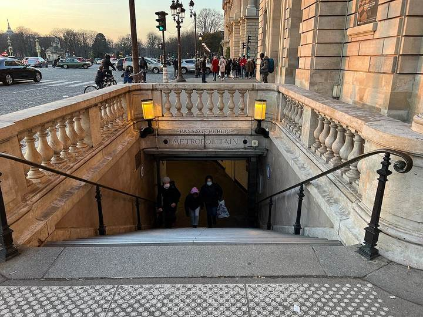
Sábado de protestos em Paris: 46 mil manifestantes, 16 estações de metrô fechadas e 232 detenções no paísSamedi de manifestations à Paris : 46 000 manifestants, 16 stations de métro fermées et 232 interpellations dans le paysProtest Saturday in Paris: 46,000 marchers, 16 metro stations closed and 232 arrests nationwide
7 NOV 2026 · Silvania Batista
Depois da greve de 5 de novembro, o governo reúne sindicatos e patrões na segunda, 9, para falar de salários e do SmicAprès la grève du 5 novembre, le gouvernement réunit syndicats et patronat lundi 9 pour parler salaires et SmicAfter the 5 November strike, the French government brings unions and employers together on Monday 9 to discuss wages and the minimum wage
6 NOV 2026 · Silvania Batista
Violência no casal: 285 mil vítimas registradas pela polícia e pela gendarmaria em 2025, alta de 5%Violences conjugales : 285 000 victimes enregistrées par la police et la gendarmerie en 2025, en hausse de 5 %Intimate partner violence in France: 285,000 victims recorded by police and gendarmerie in 2025, up 5%
5 NOV 2026 · Silvania Batista
Ciberataque no Crédit Mutuel Arkéa: transferências atrasadas, risco de phishing e o que fazer se você é clienteCyberattaque au Crédit Mutuel Arkéa : virements différés, risque de phishing et ce qu'il faut faire si vous êtes clientCyberattack at Crédit Mutuel Arkéa: delayed transfers, phishing risk and what to do if you bank there
5 NOV 2026 · Silvania Batista
Greve desta quinta, 5 de novembro: RER e trens reduzidos, metrô normal e marcha de República a NationGrève de ce jeudi 5 novembre : RER et trains réduits, métro normal et cortège de République à NationThursday 5 November strike: fewer RER and trains, normal metro, and a march from République to Nation
4 NOV 2026 · Silvania Batista
Prisões e centros de retenção: o novo controlador dos locais de privação de liberdade passa no Parlamento, mesmo com maioria de votos contraPrisons et centres de rétention : le nouveau Contrôleur général des lieux de privation de liberté franchit l'étape du Parlement, malgré une majorité de votes contrePrisons and detention centres: the new inspector of places of deprivation of liberty clears Parliament despite a majority of votes against him
4 NOV 2026 · Anne Lopes
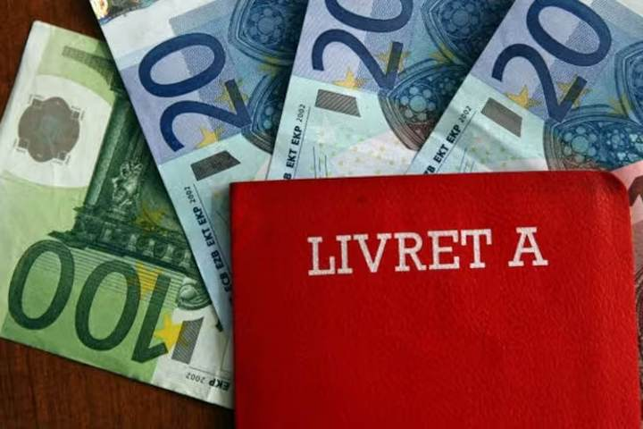
Livret A: o governo anuncia que o teto vai subir para entre 25 e 30 mil euros em fevereiro de 2027Livret A : le gouvernement annonce un plafond relevé entre 25 000 et 30 000 euros en février 2027Livret A: the government says the ceiling will rise to between 25,000 and 30,000 euros in February 2027
4 NOV 2026 · Silvania Batista
El Niño chega ao nível "muito forte" e bate recorde para um mês de outubro, informa o InmetEl Niño atteint le niveau « très fort » et bat un record pour un mois d'octobre, selon l'institut météorologique brésilienEl Niño reaches the "very strong" level and sets a record for October, Brazil's weather institute says
4 NOV 2026 · Robson Alves
Residência secundária: deputados aprovam isenção do imposto sobre o lucro da venda após 17 anos, se o comprador fizer dela a sua moradia principalRésidence secondaire : les députés votent l'exonération de plus-value après 17 ans, si l'acheteur en fait sa résidence principaleSecond homes: MPs vote a capital gains tax exemption after 17 years, if the buyer makes it their main home
4 NOV 2026 · Anne Lopes
Orçamento 2027: votação das receitas é adiada de novo, e o que os deputados já aprovaram pode cairBudget 2027 : le vote sur les recettes est encore reporté, et ce que les députés ont adopté peut tomberFrance's 2027 budget: the revenue vote is postponed again, and what MPs have passed could fall
3 NOV 2026 · Silvania Batista
Juros e dividendos: quem ganha menos tem até 30 de novembro para pedir ao banco que não retenha 12,8% em 2027Intérêts et dividendes : les foyers modestes ont jusqu'au 30 novembre pour demander à leur banque de ne pas prélever 12,8 % en 2027Interest and dividends: lower-income households have until 30 November to ask their bank not to withhold 12.8% in 2027
3 NOV 2026 · Silvania Batista
Sophie Adenot fala em Paris: 237 dias no espaço, três caminhadas fora da estação e um recorde europeuSophie Adenot à Paris : 237 jours dans l'espace, trois sorties extravéhiculaires et un record européenSophie Adenot speaks in Paris: 237 days in space, three spacewalks and a European record
3 NOV 2026 · Anne Lopes
Lareira aberta proibida na metrópole de Lille desde 1º de novembro: já são 657 comunas na França com a mesma regraCheminée à foyer ouvert interdite dans la métropole lilloise depuis le 1er novembre : 657 communes en France appliquent désormais la même règleOpen fireplaces banned in the Lille metropolitan area since 1 November: 657 French municipalities now apply the same rule
2 NOV 2026 · Silvania Batista
Imposto de renda na França: até 30 de novembro para corrigir a declaração pela internetImpôt sur le revenu : jusqu'au 30 novembre pour corriger sa déclaration en ligneFrench income tax: until 30 November to correct your return online
2 NOV 2026 · Silvania Batista
Voo para os Estados Unidos: a partir de 3 de novembro, todo passageiro precisa declarar que não esteve no Congo nos últimos 21 diasVol vers les États-Unis : à partir du 3 novembre, chaque passager doit déclarer ne pas avoir séjourné au Congo dans les 21 derniers joursFlying to the United States: from 3 November, every passenger must declare they have not been in Congo in the past 21 days
1 NOV 2026 · Silvania Batista
Tem uma segunda casa na França? Os avisos da taxe d'habitation chegam a partir de 2 de novembro, e o pagamento vence em 15 de dezembroVous avez une résidence secondaire en France ? Les avis de taxe d'habitation arrivent à partir du 2 novembre, paiement avant le 15 décembreOwn a second home in France? Housing tax bills arrive from 2 November, with payment due by 15 December
1 NOV 2026 · Silvania Batista
Mobilização de 31 de outubro: 320 mil manifestantes segundo o ministério do Interior, quase meio milhão segundo os sindicatos, e em queda em relação a 24 de outubroMobilisation du 31 octobre : 320 000 manifestants selon le ministère de l'Intérieur, près d'un demi-million selon les syndicats, en baisse par rapport au 24 octobre31 October mobilisation: 320,000 protesters according to the interior ministry, nearly half a million according to the unions, and down on 24 October
31 OUT 2026 · Silvania Batista
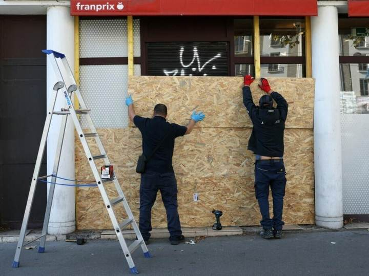
Saques de 17 de outubro: dois terços dos conteúdos que ligam a violência à imigração vêm do exterior, diz o chanceler Jean-Noël BarrotPillages du 17 octobre : deux tiers des contenus qui lient les violences à l'immigration viennent de l'étranger, affirme Jean-Noël BarrotLooting of 17 October: two thirds of the content linking the violence to immigration comes from abroad, says foreign minister Jean-Noël Barrot
31 OUT 2026 · Silvania Batista
Compras em sites de fora da UE ficam mais caras a partir deste domingo: a nova taxa europeia de 2 euros por tipo de produtoLes achats sur des sites hors UE coûtent plus cher dès ce dimanche : les nouveaux frais européens de 2 euros par type de produitBuying from non-EU websites gets more expensive from this Sunday: the new EU fee of 2 euros per product type
31 OUT 2026 · Silvania Batista
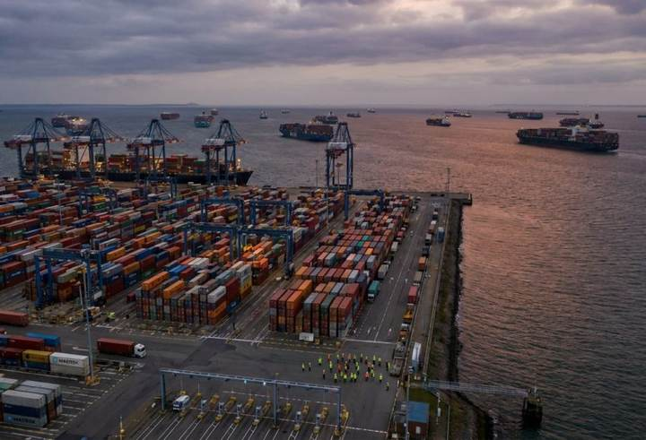
Greve dos estivadores para 24 portos franceses nesta sexta: encomendas do exterior podem atrasar, mas as balsas de passageiros circulamGrève des dockers dans 24 ports français ce vendredi : les colis venus de l'étranger peuvent prendre du retard, mais les ferries de passagers circulentDockworkers' strike hits 24 French ports on Friday: parcels from abroad may be delayed, but passenger ferries are running
30 OUT 2026 · Silvania Batista
Sábado, 31 de outubro: 70 mil policiais e gendarmes de novo nas ruas, e o alerta do ministério para a noite de HalloweenSamedi 31 octobre : 70 000 policiers et gendarmes à nouveau mobilisés, et l'alerte du ministère pour la soirée d'HalloweenSaturday 31 October: 70,000 police and gendarmes deployed again, and the ministry's warning for Halloween night
29 OUT 2026 · Silvania Batista

Pirata diz vender 847 mil placas de carros franceses: como reconhecer o golpe da multa falsaUn pirate affirme vendre 847 000 plaques d'immatriculation françaises : comment reconnaître l'arnaque à la fausse amendeA hacker claims to be selling 847,000 French number plates: how to spot the fake fine scam
28 OUT 2026 · Anne Lopes
"Casseurs-payeurs": o Senado começa a votar a lei que faz quem fica em grupo violento pagar até 10 mil euros, com ajudas sociais penhoráveis« Casseurs-payeurs » : le Sénat examine le texte qui fait payer jusqu'à 10 000 euros à ceux qui restent dans un groupe violent, prestations sociales saisissables"Rioters pay": the Senate begins voting on a bill making people who stay in a violent group pay up to 10,000 euros, with welfare benefits open to seizure
27 OUT 2026 · Silvania Batista
Ajuda de 100 euros para o combustível: pedidos abertos desde hoje para quem não recebeu, com teto de renda mais altoAide carburant de 100 euros : les demandes sont ouvertes depuis aujourd'hui pour les nouveaux bénéficiaires, avec un plafond de revenus relevé100-euro fuel aid: applications open today for those who have not received it, with a higher income ceiling
27 OUT 2026 · Silvania Batista
Café Bialetti com ocratoxina acima do limite é recolhido na França e na Irlanda: confira o loteCafé Bialetti : un lot rappelé en France et en Irlande pour de l'ochratoxine au-delà des limitesBialetti coffee recalled in France and Ireland over excess ochratoxin: check the batch
27 OUT 2026 · Anne Lopes
Mutuelles: o Conseil constitutionnel derrubou o congelamento das tarifas de 2026. O que muda para quem pagaMutuelles : le Conseil constitutionnel censure le gel des tarifs 2026. Ce qui change pour les assurésTop-up health insurance: France's Constitutional Council strikes down the 2026 price freeze. What it means for policyholders
27 OUT 2026 · Silvania Batista
Comércio depredado em outubro: empréstimo sem juros de até 50 mil euros e ajuda de até 1.500 euros, veja como pedirCommerces dégradés en octobre : prêt à taux zéro jusqu'à 50 000 euros et aide jusqu'à 1 500 euros, comment les demanderShops damaged in October: interest-free loans of up to 50,000 euros and aid of up to 1,500 euros, how to apply
27 OUT 2026 · Anne Lopes
Parcoursup substituída em 2028 e turmas de seconde limitadas a 28 alunos: o que o governo prometeu aos estudantesParcoursup remplacé en 2028 et secondes plafonnées à 28 élèves : ce que le gouvernement a promis aux jeunesParcoursup to be replaced in 2028 and seconde classes capped at 28: what the government promised students
27 OUT 2026 · Silvania Batista
O que muda na França em novembro de 2026: gás, gasóleo, trégua de inverno, aposentadorias e acidentes de trabalhoCe qui change en France en novembre 2026 : gaz, gazole, trêve hivernale, retraites et accidents du travailWhat changes in France in November 2026: gas, diesel, the winter truce, pensions and workplace accidents
25 OUT 2026 · Silvania Batista
Mais de um milhão de javalis abatidos numa temporada: o que saber para passear no bosque durante a caçaPlus d'un million de sangliers tués en une saison : ce qu'il faut savoir pour se promener en forêt pendant la chasseMore than a million wild boar killed in one season: what to know before walking in the woods during hunting
25 OUT 2026 · Anne Lopes
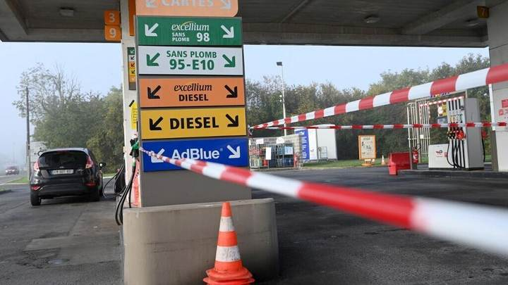
Gasóleo mais barato a partir de 1º de novembro: o decreto saiu, e o posto terá de mostrar quanto você economizaGazole moins cher dès le 1er novembre : le décret est paru, et la station devra afficher la baisseCheaper diesel from 1 November: the decree is out, and stations will have to show how much you save
25 OUT 2026 · Silvania Batista
Prime de transport: ajuda do patrão para o combustível pode chegar a 1.000 euros sem imposto até 31 de dezembroPrime de transport : l'aide de l'employeur pour le carburant peut atteindre 1 000 euros exonérés jusqu'au 31 décembreTransport bonus: employer fuel aid can reach 1,000 euros tax-free until 31 December
25 OUT 2026 · Anne Lopes
Protestos de 24/10: 410 mil nas ruas segundo o governo, quase mil detidos e novo ato marcado para 31/10Mobilisation du 24 octobre : 410 000 manifestants selon le gouvernement, près de 1 000 interpellations et un nouvel appel pour le 3124 October protests: 410,000 marchers by government count, nearly 1,000 arrests and a new protest set for 31 October
25 OUT 2026 · Silvania Batista
Pensão de reversão: o pedido agora chega parcialmente pré-preenchido, mas continua não sendo automáticoPension de réversion : la demande arrive désormais en partie pré-remplie, mais elle n'est toujours pas automatiqueSurvivor's pension: the claim form now comes partly pre-filled, but the pension is still not automatic
24 OUT 2026 · Silvania Batista
Tiros em Trappes e La Verrière: Promotoria antiterrorista investiga ataque racista que deixou um morto e cinco feridosTirs à Trappes et La Verrière : le parquet antiterroriste enquête sur une attaque raciste qui a fait un mort et cinq blessésShooting in Trappes and La Verrière: anti-terror prosecutors investigate a racist attack that left one dead and five injured
24 OUT 2026 · Silvania Batista
Mudou de casa na França? Quem tem título de residência tem 3 meses para declarar o novo endereço, e a carte grise, só 1 mêsVous avez déménagé ? Les titulaires d'un titre de séjour ont 3 mois pour déclarer leur nouvelle adresse, la carte grise seulement 1 moisMoved house in France? Residence-permit holders have 3 months to declare their new address, and only 1 month for the car registration
24 OUT 2026 · Anne Lopes
Acidente de trabalho ou doença profissional: a partir de 1º de novembro, a indenização diária passa a ter um teto bem mais baixoAccident du travail ou maladie professionnelle : à partir du 1er novembre, les indemnités journalières sont nettement plus plafonnéesWorkplace accident or occupational disease: from 1 November, daily sick pay comes with a much lower ceiling
24 OUT 2026 · Silvania Batista
Teto do aluguel: o Senado prorroga o encadrement des loyers até 2028, e a Assembleia tem até 24 de novembro para confirmarEncadrement des loyers : le Sénat prolonge le dispositif jusqu'en 2028, et l'Assemblée a jusqu'au 24 novembre pour confirmerRent cap: the Senate extends France's encadrement des loyers to 2028, and the Assembly has until 24 November to confirm
23 OUT 2026 · Anne Lopes
Sábado, 24: 70 mil policiais e gendarmes, controles nas estações e o que o ministério pediu aos préfetsSamedi 24 : 70 000 policiers et gendarmes, contrôles dans les gares et ce que le ministère a demandé aux préfetsSaturday 24: 70,000 police and gendarmes, checks at stations and what the ministry asked prefects to do
23 OUT 2026 · Silvania Batista
Itália e Espanha encerram os controles de fronteira entre si: o que muda para quem viaja com título de residência francêsL'Italie et l'Espagne mettent fin aux contrôles à leurs frontières communes : ce qui change pour qui voyage avec un titre de séjour françaisItaly and Spain end border checks between them: what changes for people travelling on a French residence permit
23 OUT 2026 · Silvania Batista
Tempestade Austen: dez departamentos do noroeste da França em alerta laranja para ventos de mais de 100 km/h nesta sexta-feiraTempête Austen : dix départements du nord-ouest de la France en vigilance orange pour des rafales de plus de 100 km/h ce vendrediStorm Austen: ten departments in north-west France on orange alert for gusts above 100 km/h this Friday
22 OUT 2026 · Silvania Batista
Sites das préfectures e o impots.gouv saem do ar por precaução após falha crítica no PHPLes sites des préfectures et impots.gouv mis hors ligne par précaution après une faille critique de PHPPrefecture websites and impots.gouv taken offline as a precaution after a critical PHP flaw
22 OUT 2026 · Silvania Batista
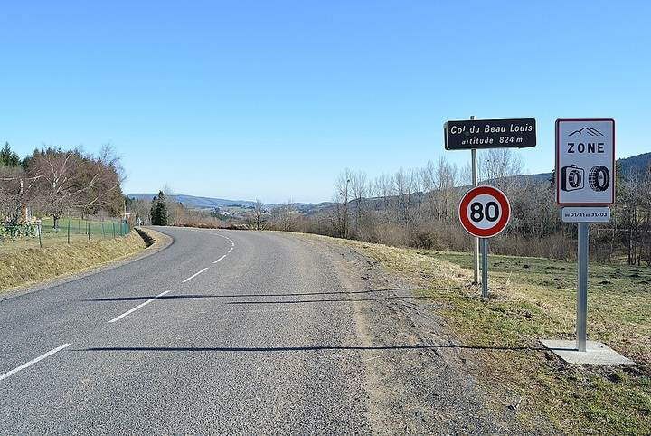
Pneus de inverno ou correntes: a partir de 1º de novembro, 34 departamentos da França voltam a exigirPneus hiver ou chaînes : à partir du 1er novembre, 34 départements de France l'exigent à nouveauWinter tyres or chains: from 1 November, 34 French departments require them again
21 OUT 2026 · La rédaction
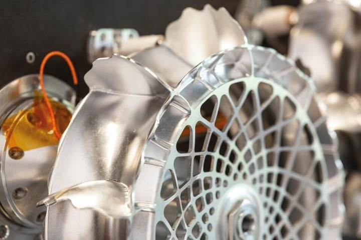
Rumo a Fobos: a missão MMX parte para trazer à Terra um pedaço de uma lua de Marte, com um rover francês a bordoCap sur Phobos : la mission MMX s'envole pour rapporter sur Terre un morceau d'une lune de Mars, avec un rover français à bordBound for Phobos: the MMX mission sets off to bring a piece of a Martian moon back to Earth, with a French rover on board
20 OUT 2026 · La rédaction
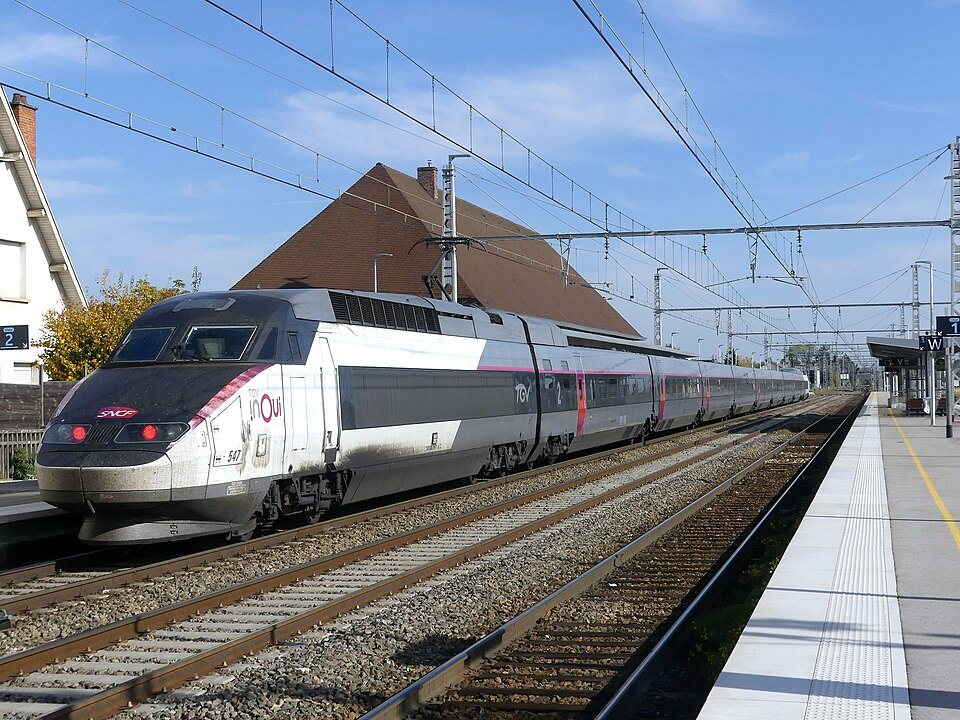
Greve de 5 de novembro: cinco sindicatos contra o orçamento 2027, e os ferroviários entram no movimentoGrève du 5 novembre : cinq syndicats contre le budget 2027, et les cheminots rejoignent le mouvementStrike on 5 November: five unions against the 2027 budget, and rail workers join the movement
20 OUT 2026 · La rédaction
ETIAS: a autorização de 20 euros para entrar na Europa ainda não existe, o início em 2026 ficou improvável, e há sites cobrando por elaETIAS : l'autorisation à 20 euros pour entrer en Europe n'existe pas encore, un lancement en 2026 devient improbable, et des sites la font déjà payerETIAS: the 20-euro authorisation to enter Europe does not exist yet, a 2026 launch now looks unlikely, and some websites are already charging for it
19 OUT 2026 · La rédaction
Aos 67 anos, ex-nadadora da seleção da Argélia atravessa o Canal da Mancha a nado, sem roupa de neopreneÀ 67 ans, une ancienne nageuse de l'équipe d'Algérie traverse la Manche à la nage, sans combinaisonAt 67, a former Algerian national team swimmer crosses the English Channel without a wetsuit
17 OUT 2026 · La rédaction
A formiga elétrica avança no sul da França: de um foco em 2022 para oito em 2026La fourmi électrique progresse dans le sud de la France : d'un foyer en 2022 à huit en 2026The electric ant spreads in southern France: from one site in 2022 to eight in 2026
16 OUT 2026 · La rédaction
Seca em pleno outubro: dois terços da França seguem em restrição máxima de água, e a multa chega a 1.500 eurosSécheresse en plein octobre : deux tiers de la France restent en restriction maximale d'eau, et l'amende peut atteindre 1 500 eurosDrought in mid-October: two-thirds of France remain under maximum water restrictions, and fines reach 1,500 euros
16 OUT 2026 · La rédaction
O TGV de dois andares da nova geração estreia em 6 de novembro, entre Paris e MarselhaLe TGV M, à deux niveaux, fait ses débuts commerciaux le 6 novembre entre Paris et MarseilleFrance's new-generation double-decker TGV makes its debut on 6 November, between Paris and Marseille
15 OUT 2026 · La rédaction
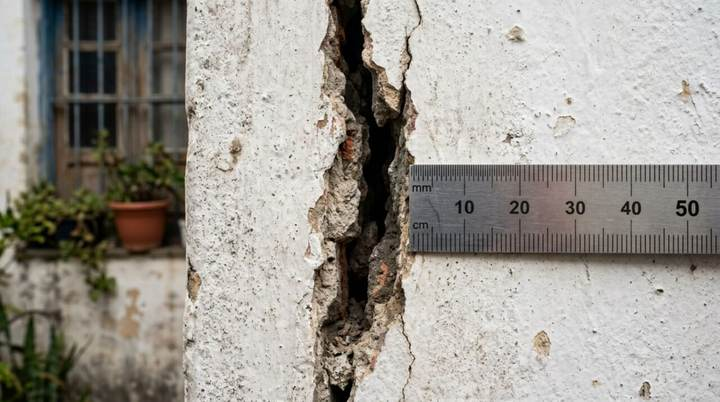
Rachaduras na casa depois da seca de 2026: um terço das casas da França está em solo de risco, e o prazo para o seguro é de 30 diasFissures après la sécheresse de 2026 : un tiers des maisons de France sur un sol à risque, et 30 jours pour déclarer à l'assureurCracks in the house after the 2026 drought: a third of French homes sit on risky soil, and you have 30 days to claim
15 OUT 2026 · La rédaction
Aluguel na França: o índice do 3º trimestre sai em +1,57%, o teto do reajuste para quem faz aniversário de contrato agoraLoyers : l'IRL du 3e trimestre ressort à +1,57 %, le plafond de la révision pour les baux concernésRent in France: the third-quarter index comes in at +1.57%, the ceiling for rent rises on leases due now
15 OUT 2026 · La rédaction
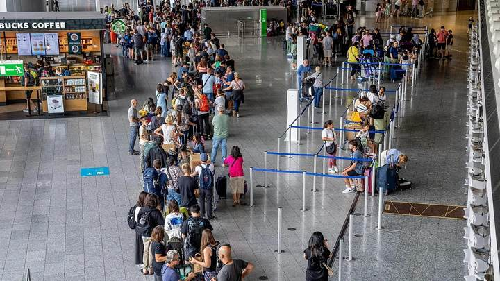
EES, um ano depois: esperas de até cinco horas e aeroportos pedem revisão do controle de fronteiraEES, un an après : jusqu'à cinq heures d'attente et les aéroports demandent une révisionEES, one year on: waits of up to five hours and airports call for a rethink
13 OUT 2026 · La rédaction
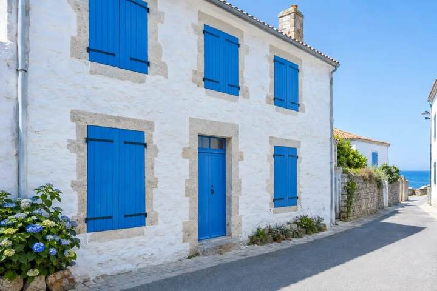
Residência secundária na França: a sobretaxa de até 60% já vale em 1.666 comunasRésidence secondaire en France : la majoration jusqu’à 60 % s’applique dans 1 666 communesSecond homes in France: a surcharge of up to 60% now applies in 1,666 communes
13 OUT 2026 · La rédaction
Incêndio destrói o Marché des Enfants Rouges, o mercado coberto mais antigo de ParisIncendie au Marché des Enfants Rouges, le plus ancien marché couvert de ParisFire destroys the Marché des Enfants Rouges, Paris's oldest covered market
12 OUT 2026 · La rédaction
Salão do Automóvel de Paris 2026: datas, ingressos, elétricos e marcas chinesasMondial de l'Auto 2026 : dates, billets, électriques et marques chinoisesParis Motor Show 2026: dates, tickets, electric cars and Chinese brands
7 OUT 2026 · La rédaction
Nobel de Química 2026: o francês Henri Kagan e o japonês Kenso Soai e o segredo das moléculas canhotasNobel de chimie 2026 : le Français Henri Kagan et le Japonais Kenso Soai et le secret des molécules gauchères2026 Chemistry Nobel: France's Henri Kagan and Japan's Kenso Soai and the secret of left-handed molecules
7 OUT 2026 · La rédaction
Nobel de Física 2026: o belga Francis Halzen e as partículas-fantasma do cosmosNobel de physique 2026 : le Belge Francis Halzen et les particules fantômes du cosmos2026 Physics Nobel: Belgium's Francis Halzen and the cosmos's ghost particles
6 OUT 2026 · La rédaction
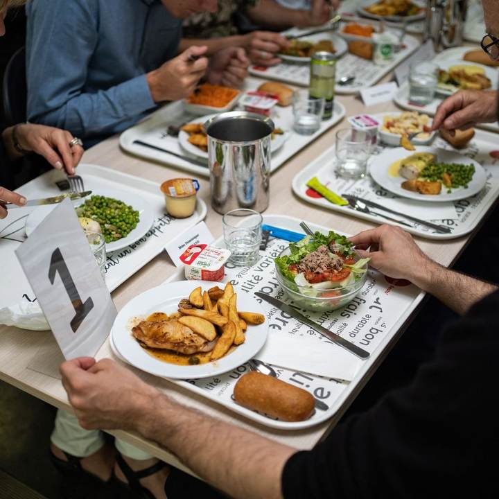
Refeição a 1 euro no Crous vale para todos os estudantes, bolsistas ou não, e inclui quem veio de foraLe repas à 1 euro au Crous vaut pour tous les étudiants, boursiers ou non, y compris ceux venus de l'étrangerThe 1-euro Crous meal is open to all students, grant holders or not, including those from abroad
5 OUT 2026 · La rédaction
Nobel de Medicina 2026 premia a optogenética: a técnica que liga e desliga neurônios com luzLe Nobel de médecine 2026 récompense l'optogénétique : la technique qui allume et éteint les neurones avec de la lumièreThe 2026 Nobel in Medicine rewards optogenetics: the technique that switches neurons on and off with light
5 OUT 2026 · La rédaction
A hora muda na madrugada de 25 de outubro: você ganha uma hora de sono, e a UE segue sem conseguir acabar com o ritualL'heure change dans la nuit du 25 octobre : vous gagnez une heure de sommeil, et l'UE n'arrive toujours pas à supprimer le rituelThe clocks change in the early hours of 25 October: you gain an hour's sleep, and the EU still cannot end the ritual
5 OUT 2026 · La rédaction
O imposto sobre a propriedade chega na caixa de correio: quem paga, quanto subiu e até quando pagarLa taxe foncière arrive dans la boîte aux lettres : qui paie, de combien elle augmente et jusqu'à quand réglerThe property tax lands in the letterbox: who pays, how much it rose and by when to pay
5 OUT 2026 · La rédaction
Bolsa escolar na França: o prazo para pedir termina em 15 de outubro, e muitas famílias imigrantes deixam o dinheiro na mesaBourse scolaire en France : la demande se termine le 15 octobre, et beaucoup de familles immigrées laissent l'argent de côtéSchool grants in France: the deadline to apply is 15 October, and many immigrant families leave the money on the table
5 OUT 2026 · La rédaction
Greve de pilotos e comissários ameaça voos de 17 a 21 de outubro, no início das férias de ToussaintUne grève de pilotes et de personnels de cabine menace les vols du 17 au 21 octobre, au début des vacances de ToussaintA pilots' and cabin-crew strike threatens flights from 17 to 21 October, at the start of the Toussaint holidays
5 OUT 2026 · La rédaction
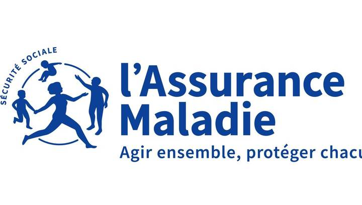
"Mon soutien psy": 12 sessões por ano, e agora sem precisar adiantar o dinheiro« Mon soutien psy » : 12 séances par an, et désormais sans avance de frais"Mon soutien psy": 12 sessions a year, now without paying upfront
1 OUT 2026 · La rédaction
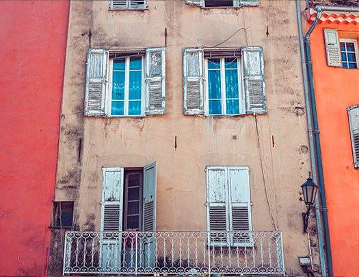
As APL sobem 1,15% em outubro, mas o governo já quer congelá-las em 2027Les APL augmentent de 1,15% en octobre, mais le gouvernement veut déjà les geler en 2027Housing benefits rise 1.15% in October, but the government already wants to freeze them in 2027
1 OUT 2026 · La rédaction
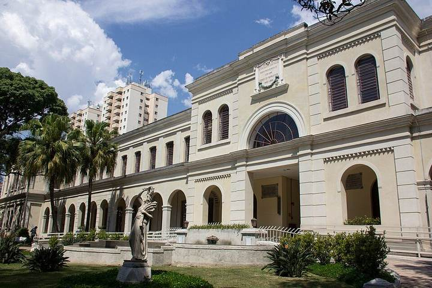
Viajar com récépissé: o que a regra realmente permite enquanto a carte de séjour não chegaVoyager avec un récépissé : ce que la règle autorise vraiment en attendant la carte de séjourTravelling on a récépissé: what the rule actually allows while you wait for your carte de séjour
1 OUT 2026 · La rédaction
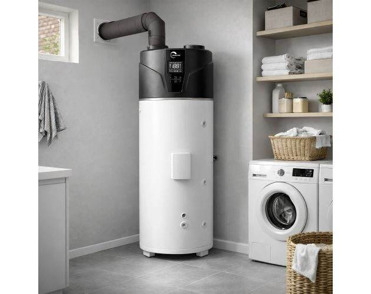
Bomba de calor por "leasing social": a França lança uma ajuda de até 9.800 euros para trocar o aquecimento a gás ou a óleoPompe à chaleur en « leasing social » : la France lance une aide pouvant atteindre 9 800 euros pour remplacer le chauffage au gaz ou au fioulHeat pump by "social leasing": France launches aid of up to €9,800 to replace gas or oil heating
1 OUT 2026 · La rédaction
France Identité chega a 5 milhões de usuários: o que é, para que serve e quem pode usarFrance Identité atteint 5 millions d'utilisateurs : ce que c'est, à quoi ça sert et qui peut l'utiliserFrance Identité reaches 5 million users: what it is, what it does and who can use it
1 OUT 2026 · La rédaction
Aluguel na França: um novo contrato-tipo é obrigatório a partir de 1º de outubroLocation en France : un nouveau contrat type devient obligatoire au 1er octobreRenting in France: a new standard contract becomes mandatory from 1 October
1 OUT 2026 · La rédaction
Aluguel na França: quase 4 em cada 10 contratos passam do teto legalLoyers en France : près de 4 baux sur 10 dépassent le plafond légalRent in France: nearly 4 in 10 leases exceed the legal cap
30 SET 2026 · La rédaction
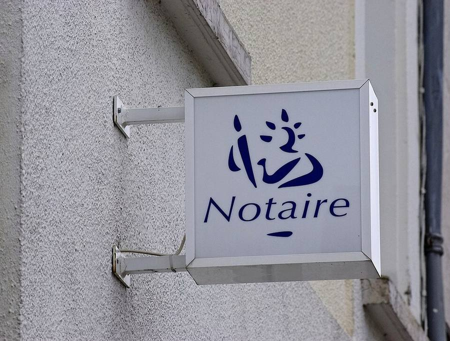
Herança na França: o debate que se abre para 2027 e como o imposto funciona hojeHéritage en France : le débat qui s'ouvre pour 2027 et comment l'impôt fonctionne aujourd'huiInheritance in France: the debate opening for 2027 and how the tax works today
30 SET 2026 · La rédaction
"Dérivomètre": a ferramenta da França para reconhecer o charlatanismo na saúde« Dérivomètre » : l'outil français pour repérer le charlatanisme en santé"Dérivomètre": France's tool to spot health-care charlatanism
30 SET 2026 · La rédaction
Empréstimo de reparação: a UE quer usar os bilhões russos congelados para financiar a UcrâniaPrêt de réparation : l'UE veut utiliser les milliards russes gelés pour financer l'UkraineReparations loan: the EU wants to use frozen Russian billions to fund Ukraine
29 SET 2026 · La rédaction
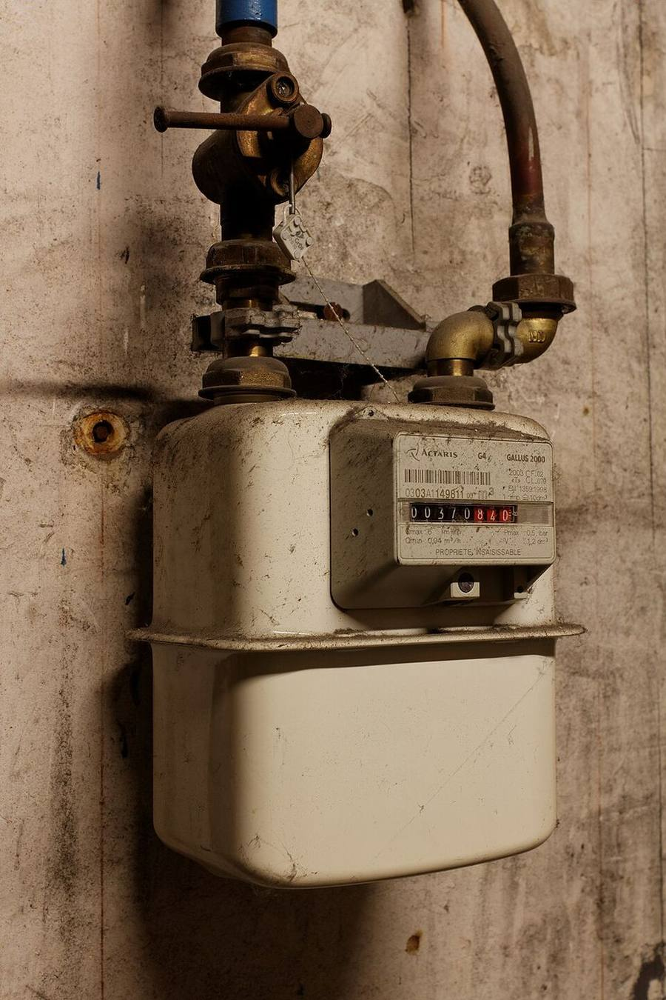
O que muda na França em outubro de 2026: gás, impostos, saúde, aluguel e escolaCe qui change en France en octobre 2026 : gaz, impôts, santé, logement et écoleWhat changes in France in October 2026: gas, taxes, health, rent and school
29 SET 2026 · La rédaction
Passoires thermiques: os imóveis que já não podem ser alugados na França, e o que isso muda para vocêPassoires thermiques : les logements qui ne peuvent plus être loués en France, et ce que cela change pour vousEnergy sieves: the homes that can no longer be rented in France, and what it changes for you
29 SET 2026 · La rédaction
Mundial de ciclismo: McNulty vence sozinho em Montréal e o jovem francês Seixas fica sem pódioMondiaux de cyclisme : McNulty s'impose en solitaire à Montréal, le jeune Français Seixas hors du podiumCycling Worlds: McNulty soloes to victory in Montréal as young Frenchman Seixas misses the podium
28 SET 2026 · La rédaction
Ajudas ao carburante: quem tem direito à indemnité de 100€ e ao apoio alargadoAides au carburant : qui a droit à l'indemnité de 100€ et au dispositif élargiFuel aid: who is entitled to the 100€ payment and the wider support
28 SET 2026 · La rédaction
Sénatoriales 2026: o RN forma grupo no Senado pela primeira vez, a LFI entra e a direita mantém a maioriaSénatoriales 2026 : le RN forme un groupe au Sénat pour la première fois, LFI fait son entrée et la droite garde la majorité2026 Senate elections: the RN forms a Senate group for the first time, LFI enters and the right keeps its majority
28 SET 2026 · La rédaction
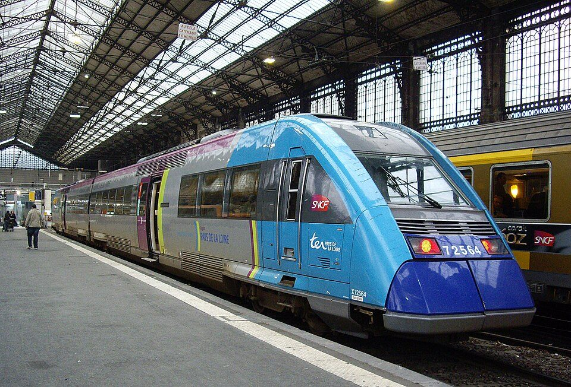
Greve de 29 de setembro na França: o que pode fechar e como se planejarGrève du 29 septembre en France : ce qui peut fermer et comment s'organiserThe 29 September strike in France: what may close and how to plan ahead
26 SET 2026 · La rédaction
Brasileira de 25 anos é encontrada morta em carro do ex-companheiro na FrançaUne Brésilienne de 25 ans retrouvée morte dans la voiture de son ex-compagnon en France25-year-old Brazilian woman found dead in her ex-partner's car in France
23 SET 2026 · La rédaction
De Paris ao Planalto: um dos maiores criminalistas do país analisa a crise democrática no BrasilDe Paris au pouvoir : l'un des plus grands pénalistes du Brésil analyse la crise démocratiqueFrom Paris to the Planalto: one of the country's greatest criminal lawyers analyzes Brazil's democratic crisis
23 SET 2026 · Maria Paula Carvalho
Brasileiros estão entre os que menos têm o visto americano recusadoLes Brésiliens parmi ceux dont le visa américain est le moins refuséBrazilians are among those least refused a US visa
21 SET 2026 · 5 MIN · PT/FR · La rédaction
Sénatoriales: como os franceses do exterior elegem seus senadoresSénatoriales : comment les Français de l'étranger élisent leurs sénateursSénatoriales: how French citizens abroad choose their senators
21 SET 2026 · 6 MIN · PT/FR · La rédaction
Barcelona inaugura a maior fábrica de pesquisa de chips quânticos da EspanhaBarcelone inaugure la plus grande infrastructure de recherche de puces quantiques d'EspagneBarcelona opens Spain's largest quantum-chip research facility
17 SET 2026 · 4 MIN · PT/FR ·
A travessia de Bruno e o alerta que a irmã não quer que se percaLa traversée de Bruno et l'alerte que sa sœur ne veut pas voir oubliéeBruno's crossing and the warning his sister doesn't want lost
14 SET 2026 · 8 MIN · PT/FR ·
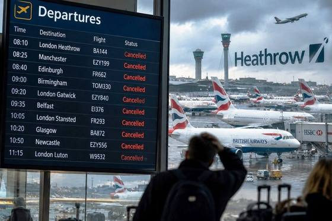
Pane no controlo aéreo do Reino Unido cancela mais de 2.000 voosUne panne du contrôle aérien britannique annule plus de 2 000 volsUK air-traffic control failure cancels over 2,000 flights
10 SET 2026 · 6 MIN · PT/FR ·
Adeus ao «avô da nação»: a Noruega enterra o rei Harald VAdieu au « grand-père de la nation » : la Norvège enterre le roi Harald VFarewell to the «nation's grandfather»: Norway buries King Harald V
10 SET 2026 · 5 MIN · PT/FR ·
França sem Macron no páreo: a extrema-direita lidera a corrida de 2027La France sans Macron : l’extrême droite en tête de la course de 2027France with no Macron in the running: the far right leads the 2027 race
7 SET 2026 ·
Um único sinal no fundo de uma mina pode ser a matéria escura — mas ninguém está cantando vitóriaUn seul signal au fond d'une mine pourrait être la matière noire — mais personne ne crie victoireA single signal deep in a mine could be dark matter — but no one is claiming victory
3 SET 2026 ·
O que muda na França em setembro de 2026: o guia prático para o seu bolsoCe qui change en France en septembre 2026 : le guide pratique pour votre budgetWhat's changing in France in September 2026: the practical guide for your wallet
2 SET 2026 ·
Ação inédita leva o préfet dos Hauts-de-Seine à Justiça por travar renovações de títulosUne action inédite traîne le préfet des Hauts-de-Seine en justice pour blocage des renouvellements de titresAn unprecedented case takes the préfet of Hauts-de-Seine to court over stalled permit renewals
2 SET 2026 ·
A China cruza um marco: a capacidade solar ultrapassa o carvão pela 1ª vezLa Chine franchit un cap : la capacité solaire dépasse le charbon pour la 1re foisChina crosses a milestone: solar capacity overtakes coal for the first time
2 SET 2026 ·
A França recria um serviço militar: 3.000 jovens começaram esta semanaLa France relance un service militaire : 3 000 jeunes ont commencé cette semaineFrance revives a military service: 3,000 young people started this week
1 SET 2026 ·
Messi tira a camisa da Argentina — e uma geração sente que o tempo passouMessi range le maillot de l'Argentine — et une génération sent que le temps a passéMessi takes off the Argentina jersey — and a generation feels that time has passed
1 SET 2026 ·
Champions League 2026/27: o sorteio define o caminho dos gigantes até a finalLigue des champions 2026/27 : le tirage trace la route des géants vers la finaleChampions League 2026/27: the draw sets the giants' path to the final
31 AGO 2026 ·
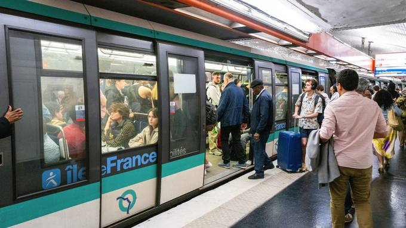
Paris voltou das férias, as obras não: a rentrée dos transportes começa com o RER D sob pressãoParis est rentré de vacances, pas les travaux : la rentrée des transports commence avec le RER D sous pressionParis is back from vacation, the roadworks aren't: the transit rentrée starts with the RER D under strain
31 AGO 2026 ·
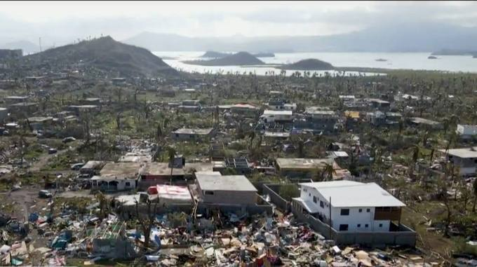
Mayotte, o laboratório do endurecimento: Lecornu promete "militarizar" a luta contra a imigração clandestinaMayotte, laboratoire du durcissement : Lecornu promet de « militariser » la lutte contre l'immigration clandestineMayotte, the crackdown lab: Lecornu vows to "militarize" the fight against illegal immigration
31 AGO 2026 ·
Rentrée 2026/2027: o que muda nas escolas francesas neste novo ano letivoRentrée 2026/2027 : ce qui change dans les écoles françaisesRentrée 2026/2027: what's changing in French schools this new academic year
AGO 2026 ·
Uma Lua quase toda mordida pela sombra da Terra: o eclipse desta sexta de madrugadaUne Lune presque entièrement mordue par l'ombre de la Terre : l'éclipse de ce vendredi à l'aubeA Moon almost entirely swallowed by Earth's shadow: this Friday's predawn eclipse
27 AGO 2026 ·
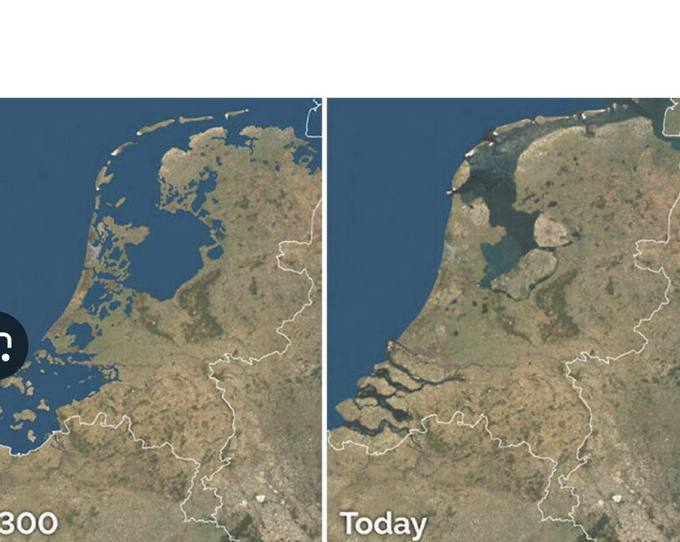
Como os holandeses fizeram um golfo desaparecer do mapaComment les Néerlandais ont fait disparaître un golfe de la carteHow the Dutch made a gulf disappear from the map
25 AGO 2026 ·
A conta que não fecha: França corta auxílio-moradia de estudantes estrangeirosLe compte n'y est plus : la France coupe l'aide au logement des étudiantsThe math that doesn't add up: France cuts housing aid for foreign students
25 AGO 2026 ·
Você sabia que os franceses no Brasil elegem os próprios representantes?Saviez-vous que les Français du Brésil élisent leurs propres représentants ?Did you know that the French in Brazil elect their own representatives?
24 AGO 2026 ·
Brasil x França: a rivalidade mais elegante do futebolBrésil–France : la rivalité la plus élégante du footballBrazil vs. France: soccer's most elegant rivalry
24 AGO 2026 ·
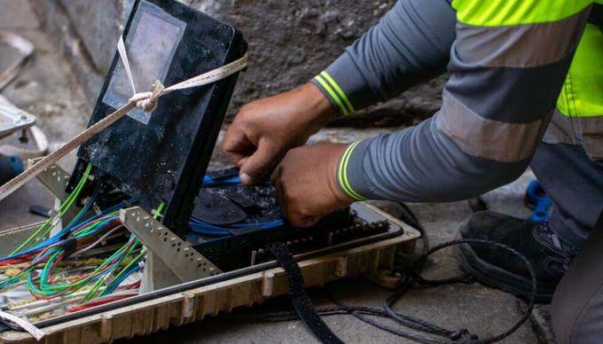
Não, a internet não vai “cair” amanhã na França — mas o ADSL está com os dias contadosNon, internet ne va pas « tomber » demain en France — mais l'ADSL vit ses derniers joursNo, the internet won't “go down” tomorrow in France — but ADSL's days are numbered
21 AGO 2026 · 5 MIN · PT/FR ·
Quando cortar um cabo apaga uma região: a fragilidade das redes na FrançaQuand couper un câble éteint une région : la fragilité des réseaux en FranceWhen cutting one cable wipes out a region: the fragility of France's networks
21 AGO 2026 · 6 MIN · PT/FR ·
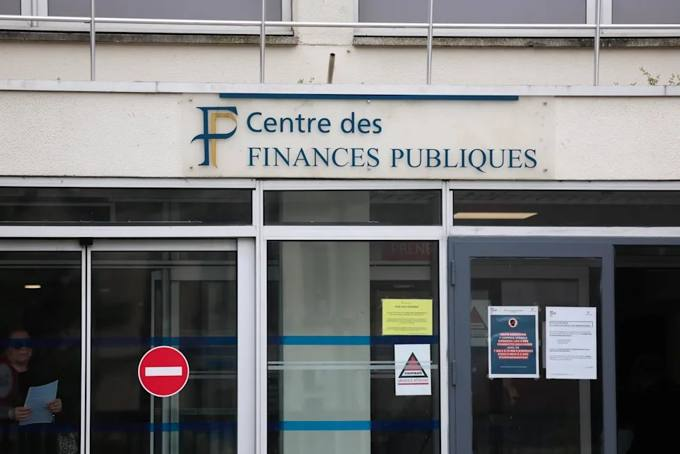
Ataque hacker ao fisco francês expõe dados de 678 mil contribuintesUne cyberattaque contre le fisc français expose les données de 678 000 contribuablesHacker attack on France's tax authority exposes data of 678,000 taxpayers
21 AGO 2026 · 5 MIN · PT/FR ·
Falar francês deixou de ser conselho: virou condiçãoParler français n'est plus un conseil : c'est devenu une conditionSpeaking French is no longer just advice: it's now a requirement
19 AGO 2026 · 8 MIN · PT/FR ·
Brasileiros já entram na Guiana Francesa sem visto de curta duraçãoLes Brésiliens entrent désormais en Guyane sans visa de court séjourBrazilians can now enter French Guiana without a short-stay visa
31 JUL 2026 · 6 MIN · PT/FR ·
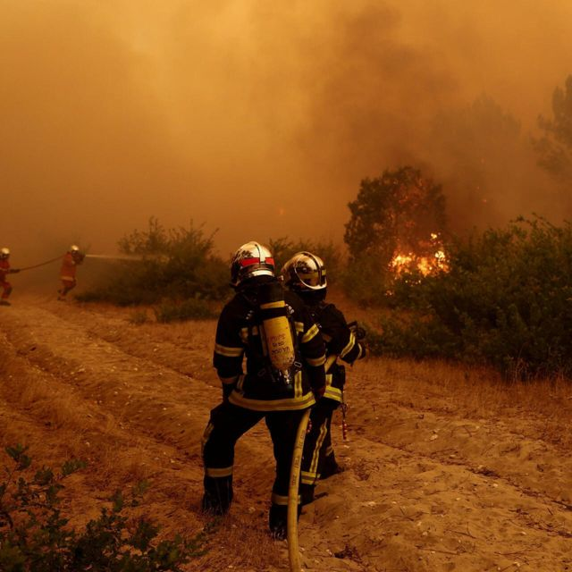
Europa sob calor extremo: França calcula prejuízo de até €15 bilhões enquanto seca e incêndios avançamL'Europe sous chaleur extrême : la France chiffre jusqu'à 15 milliards d'euros de dégâts, alors que sécheresse et incendies progressentEurope under extreme heat: France estimates losses of up to €15 billion as drought and wildfires spread
12 AGO 2026 · 7 MIN · PT/FR ·
Europa começa a mudar as embalagens: nova lei da UE passa a valer hojeL'Europe commence à changer ses emballages : la nouvelle loi de l'UE s'applique dès aujourd'huiEurope starts changing packaging: new EU law takes effect today
12 AGO 2026 · 6 MIN · PT/FR ·
Wellington é encontrado com vida em Ivry-sur-SeineWellington retrouvé vivant à Ivry-sur-SeineWellington is found alive in Ivry-sur-Seine
12 AGO 2026 · 8 MIN · PT/FR ·
Terremoto de 7,1 deixa 39 mortos no JapãoUn séisme de 7,1 fait 39 morts au JaponMagnitude 7.1 earthquake leaves 39 dead in Japan
12 AGO 2026 · 10 MIN · PT/FR ·
Itália e Espanha: o que muda para quem viajaItalie et Espagne : ce qui change pour voyagerItaly and Spain: what changes for travelers
12 AGO 2026 · 10 MIN · PT/FR ·
Jovem morre após injeção estética clandestinaUne jeune femme meurt après une injection clandestineYoung woman dies after illegal cosmetic injection
31 JUL 2026 · 10 MIN · PT/FR ·
Ceuta sob pressão: Exército na fronteiraCeuta sous pression : l'armée à la frontièreCeuta under pressure: army at the border
31 JUL 2026 · 11 MIN · PT/FR ·
O euro vai ganhar uma nova caraL'euro va changer de visageThe euro is getting a new look
28 JUL 2026 · 8 MIN · PT/FR ·
Brasileiro na França investigado por financiar ataquesUn Brésilien en France soupçonné d'avoir financé des attaquesBrazilian in France investigated for financing attacks
28 JUL 2026 · 9 MIN · PT/FR ·
Zidane é o novo técnico da seleção francesaZidane, nouveau sélectionneur des BleusZidane is the new coach of the French national team
28 JUL 2026 · 7 MIN · PT/FR ·
Um ano depois: Jhordana reconstrói a vidaUn an après : Jhordana reconstruit sa vieOne year later: Jhordana rebuilds her life
28 JUL 2026 · 12 MIN · PT/FR ·
"O que fica é a impotência": o relato de Júlia« Ce qui reste, c'est l'impuissance » : le récit de Júlia"What stays with you is the helplessness": Júlia's story
28 JUL 2026 · 11 MIN · PT/FR ·
"Minha filha não fugiu": a mãe de Alice fala« Ma fille n'a pas fugué » : la mère d'Alice parle"My daughter didn't run away": Alice's mother speaks
28 JUL 2026 · 11 MIN · PT/FR ·
UE aprova 21º pacote de sanções à RússiaL'UE adopte son 21e paquet de sanctionsEU approves 21st package of sanctions on Russia
26 JUL 2026 · 10 MIN · PT/FR ·
Zona do euro volta a crescer em julhoLa zone euro renoue avec la croissanceEurozone returns to growth in July
26 JUL 2026 · 8 MIN · PT/FR ·
Bruxelas acusa TikTok sobre contas de menoresBruxelles met TikTok en cause sur les mineursBrussels accuses TikTok over minors' accounts
26 JUL 2026 · 9 MIN · PT/FR ·
Sarcelles: seis indiciados no caso da sinagogaSarcelles : six mis en examen dans l'affaire de la synagogueSarcelles: six charged in the synagogue case
26 JUL 2026 · 8 MIN · PT/FR ·
Carro atinge multidão no Orgulho de BerlimUne voiture percute la foule au CSD de BerlinCar hits crowd at Berlin Pride
26 JUL 2026 · 8 MIN · PT/FR ·
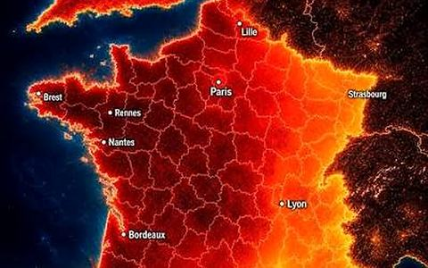
Quarta onda de calor: até 40 °C dia 29Quatrième canicule : jusqu'à 40 °C le 29Fourth heat wave: up to 40 °C on the 29th
26 JUL 2026 · 9 MIN · PT/FR ·
Incêndios: evacuações chegam a BordeauxIncendies : évacuations aux portes de BordeauxWildfires: evacuations reach Bordeaux
25 JUL 2026 · 12 MIN · PT/FR ·
O fim da era Deschamps na seleção francesaLa fin de l'ère Deschamps chez les BleusThe end of the Deschamps era with the French national team
22 JUL 2026 · 7 MIN · PT/FR ·
Capitão de Cabo Verde sob investigaçãoLe capitaine du Cap-Vert visé par une enquêteCape Verde captain under investigation
01 JUL 2026 · 6 MIN · PT/FR ·
Os RER que fecham à noite: obras que mudam a rotinaLes RER qui ferment la nuit : des travaux qui changent toutThe RER lines closing at night: works that change daily routines
17 JUN 2026 · 4 MIN · PT/FR ·
Francilienne a 90 km/h: o que muda para quem dirigeFrancilienne à 90 km/h : ce qui change au volantFrancilienne at 90 km/h: what changes for drivers
17 JUN 2026 · 3 MIN · PT/FR ·
Brasil estreia na Copa e empata com MarrocosLe Brésil débute la Coupe par un nul contre le MarocBrazil debuts at the World Cup and draws with Morocco
13 JUN 2026 · 4 MIN · PT/FR ·
Começa a Copa 2026: a maior da históriaLa Coupe 2026 commence : la plus grande de l'histoireThe 2026 World Cup begins: the biggest in history
12 JUN 2026 · 4 MIN · PT/FR ·
A bola da Copa 2026: a adidas TriondaLe ballon 2026 : l'adidas TriondaThe 2026 World Cup ball: the adidas Trionda
11 JUN 2026 · 7 MIN · PT/FR ·
O Brasil e o peso de uma história únicaLe Brésil et le poids d'une histoire uniqueBrazil and the weight of a singular history
11 JUN 2026 · 6 MIN · PT/FR ·
Copa 2026: a esperança do hexaCoupe 2026 : l'espoir de l'hexa2026 World Cup: the hope for a sixth title
11 JUN 2026 · 9 MIN · PT/FR ·
Mercosul × UE: o acordo de 25 anosMercosur × UE : l'accord de 25 ansMercosur × EU: the 25-year agreement
22 MAI 2026 · 11 MIN · PT/FR ·
Macron, África e a restituição: 9 anos depoisMacron, l'Afrique et la restitutionMacron, Africa and restitution: 9 years later
13 MAI 2026 · 10 MIN · PT/FR ·
França fiscal: orçamento impossível 2026France fiscale : budget impossible 2026Fiscal France: the impossible 2026 budget
20 MAI 2026 · 14 MIN · PT/FR ·
Ebola: OMS declara emergência globalEbola : l'OMS déclare l'urgence mondialeEbola: WHO declares global emergency
20 MAI 2026 · 11 MIN · PT/FR ·
26 anos depois: equivalência Brasil-Portugal26 ans plus tard, ratifié : l'équivalence scolaire Brésil-Portugal26 years later: Brazil-Portugal equivalence
14 MAI 2026 · 10 MIN · PT/FR ·
Paris redesenha o século: CDG ExpressParis redessine le siècle : CDG ExpressParis redesigns the century: CDG Express
13 MAI 2026 · 10 MIN · PT/FR ·
Atropelamento em massa em LeipzigAttaque à la voiture-bélier à LeipzigMass vehicle attack in Leipzig
5 Mai 2025 · 5 min · PT/FR ·
ETIAS: a nova fronteira digital da EuropaETIAS : la nouvelle frontière numérique européenneETIAS: Europe's new digital border
5 Mai 2026 · 6 min · PT/FR ·
CDG Express: nova era do transporteCDG Express : la nouvelle ère du transport parisienCDG Express: a new era of transport
5 Mai 2026 · 6 min · PT/FR ·
Acidente do ônibus no Sena: tragédia em ParisAccident du bus dans la Seine : tragédie à ParisThe bus accident in the Seine: tragedy in Paris
5 Mai 2026 · 5 min · PT/FR ·
A França encarece a entrada dos seusLa France renchérit l'entrée des siensFrance raises the cost of entry for its own
5 Mai 2026 · 6 min · PT/FR ·
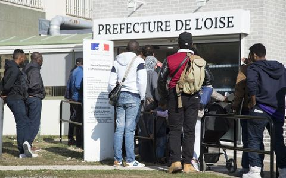
França mergulhada em nova crise políticaLa France plongée dans une nouvelle crise politiqueFrance plunged into a new political crisis
15 Abr 2026 · 7 min · PT/FR ·